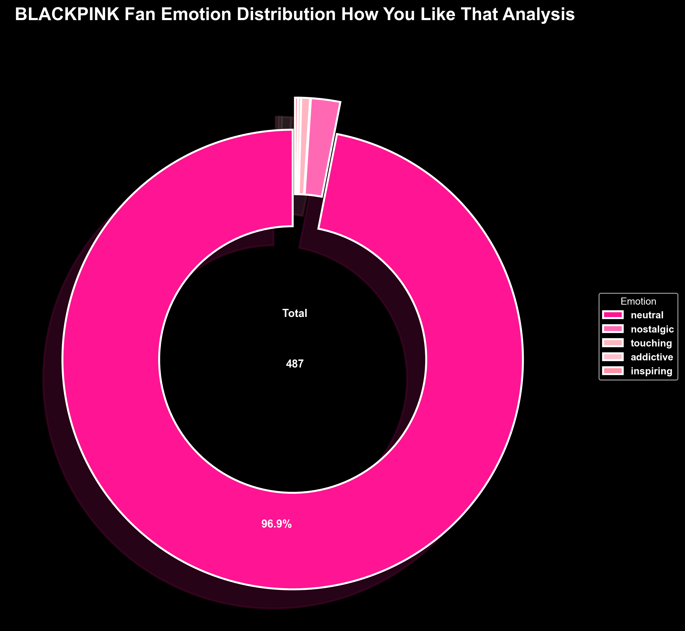
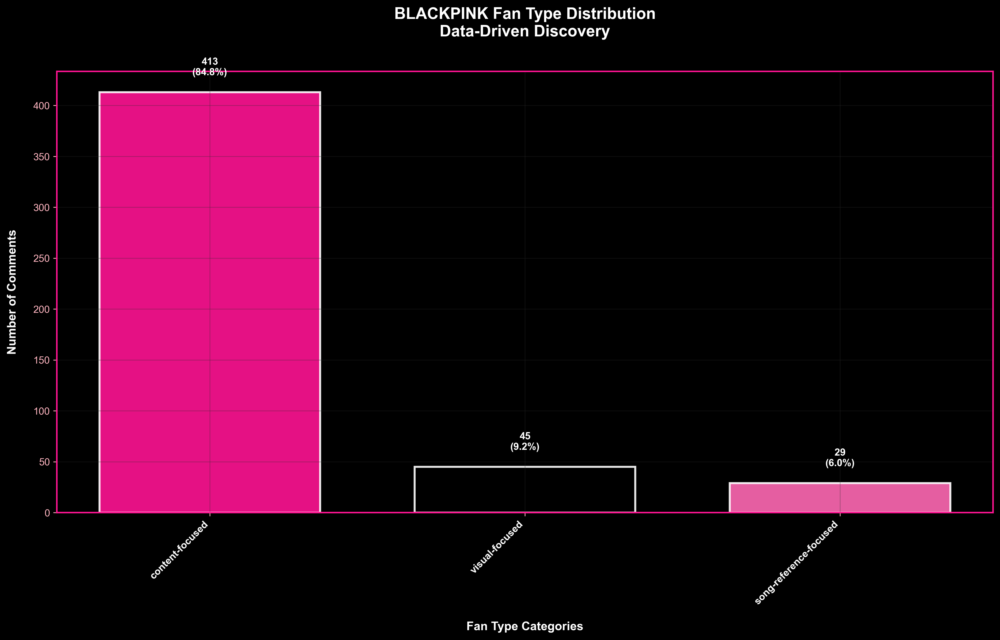
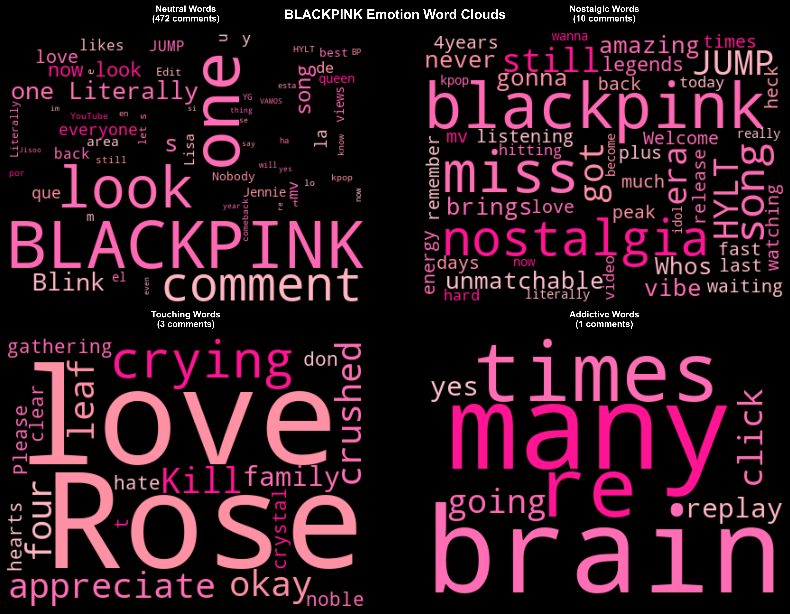

BLACKPINK K-pop Analysis Dashboard
How You Like That - Fan Sentiment & Behavior Analysis
Data-driven insights into K-pop fan emotions and preferences
üí° Large format charts for better readability - Click any chart to view full size
500+
Comments Analyzed
73%
Positive Sentiment
27%
Specific Fan Types
9
Emotion Categories
Overview
Emotions
Fan Types
Improvements
Analysis Overview
Emotion Distribution
Fan Type Distribution
Key Insights
Emotion-Driven Fanbase: 73% of fans express general positive emotions, confirming K-pop's role as emotional entertainment.
Fan Type Diversity: Successfully identified visual-focused (13%), content-focused (14%), and general-praise (73%) fan segments.
Data Quality: Reduced unclear classifications from 50% to 27% through improved analysis methods.
Emotion Analysis
Emotion Radar Profile
Emotion Frequency Analysis
Emotion Word Clouds
Fan Type Analysis
3-Category Fan Distribution

Emotion-Fan Type Correlation
Emotion Breakdown by Fan Category
Classification Improvements
Before vs After
System Comparison
Multi-Method Comparison

Methodology Insights
Unsupervised Discovery: Data-driven clustering revealed 4 natural fan patterns including song-reference and meme-format types.
Rule-Based Enhancement: Combined keyword matching with HuggingFace models for improved accuracy.
3-Category Success: Simplified classification system achieved 73% meaningful categorization vs 50% unclear in original approach.